By Elizabeth Dunlop Richter
Heading north from Seattle on Interstate 5 on an April morning, the visitor notices a stylized pattern of tulips in the concrete retaining wall at the Mount Vernon exit, a clue for an unusual local celebration. Continuing into Mount Vernon, one sees yet more concrete tulips, these in bas relief on the upper border of the overpass. Why tulips in this agricultural center of the Skagit Valley, where fields from alfalfa to strawberries to rhubarb stretch for miles?
The answer will come several miles ahead through Mount Vernon and down the road to the west. First, one passes more hints of tulips to come.
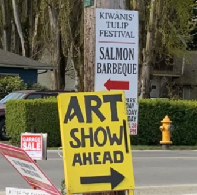 |
Yes, it’s the 2024 Skagit Valley Tulip Festival, celebrating the annual regional showcase of tulips and tulip related activities. Everyone joins in the fun. Where are the tulips themselves? Leaving town, one drives past fields both ready for early harvests and freshly plowed for spring planting.
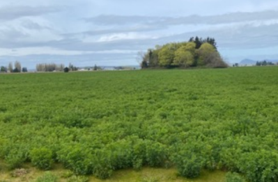 |
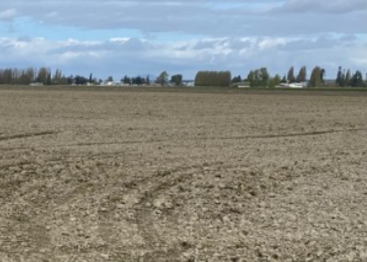 |
Finally, in the distance, a thin line of red appears across a green field.
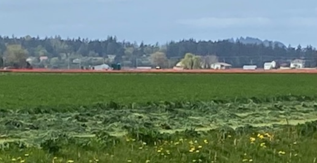
And then, turning a corner, you see them…acres of tulips!
While Washington state is not the most prolific tulip producer, behind Michigan, Califorinia, Oregon, and Florida among others, it boasts one of the largest tulip growers in the United States. Roozengaarde is one of several tulip farms in the area, but by far the largest with over 50 acres of tulips and daffodils; other flowers are grown year-round in greenhouses. Roozengaarde not only welcomes visitors year-round but is well organized to handle an estimated 500,000 tulip fans who come to the month-long Skagit Valley Tulip Festival in April. Carefully managed parking areas, street crossing guards, and helpful staff guide visitors to the elaborate demonstration garden and the fields beyond. Ample restrooms, a snack bar, gift shop, picnic tables, and benches accommodate visitors comfortably.
But it’s not until one enters Roozengaarde that one realizes the need for the serious crowd control. Following a tulip-lined sidewalk to the entrance, one gradually sees the broad scope of the operation.
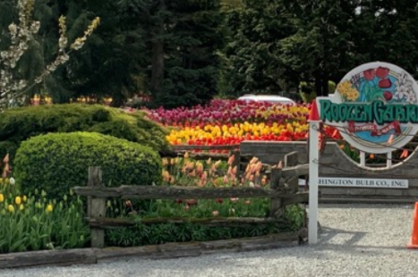 Roozengaarde entrance |
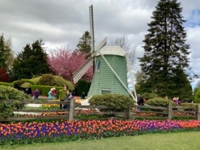 Welcoming windmill signals Dutch origins |
|
Roozengaarde demonstration garden |
Roozengaarde demonstration garden |
The Roozen family has raised tulips in the Netherlands since the 1700s. In 1947, William Roozen Sr. brought his family expertise to northwest Washington, and the farm has continued to expand for 75 years. A seven-acre demonstration garden is redesigned every year to highlight the 500 varieties of blooms. Add the drama of the 50 acres of daffodil and tulip fields and it’s not surprising that hundreds of thousands of visitors come in the course of the month-long festival. Among the regulars are the Plein Air Painters of Washington, including my husband Tobin. 16 members of the group were given access to the gardens this year (limited to control the number of easels and related supplies in the rows); artists set up in groups or individually throughout the acreage.
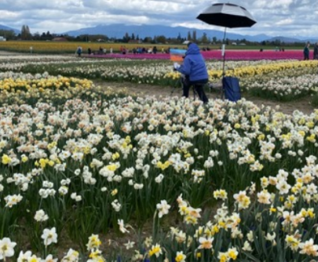 |
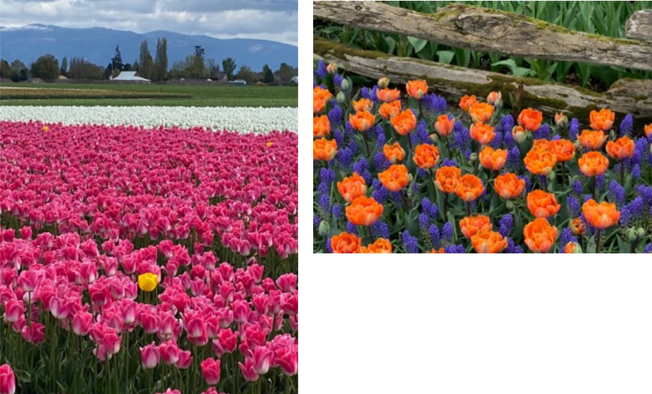
Tobin ponders the tulip options
Tobin chose his location to paint carefully. “It was the spot that had everything. It was oriented towards the mountains. There were multiple masses of color in the foreground, midground and distance.
A work in progress
If visitors aren’t painting, they are photographing! Every tulip bed cries out to be the background of a photo! Roozengaarde encourages photography and asks visitors to post their pictures on its website.
Despite the 50 degree temperature, women shed their sweaters for the perfect picture
Exploring the distant fields, one sees tulips and daffodils in various stages of growth. As Chicago gardeners know, various varieties of bulbs bloom at different times. Growers sell cut flowers, but for many the core business is shipping bulbs around the world. When tulip blooms reach the right stage, the plants are “topped” to shift the plant’s energy to the bulb. Visitors can see Fields with leaves but no blooms, fields that will be harvested for bulbs.
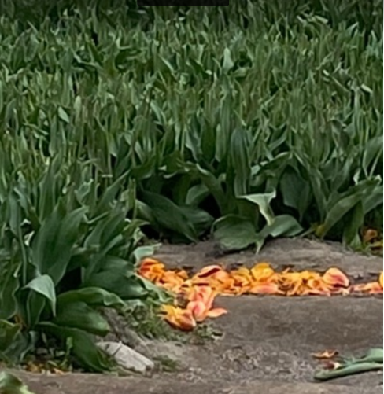
Topped tulip fields to be harvested for bulbs
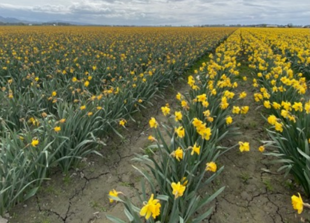
Varieties of daffodils bloom on different schedules
Daffodil blooms, unlike tulips, are left to wither in place and are not “topped” before bulbs are harvested. While most daffodils have finished blooming when tulips open, different varieties have later blooming times and one can see early and late blooming daffodils in adjacent fields.
A day with the tulips, whether painting, photographing, or wandering the gardens and fields, is a day immersed in beauty and the miracle of nature. It’s hard not to want to take a smai bit of the magic home. A tent filled with cut flowers offers visitors the chance to do just that. But a small bouquet can only remind one that it’s just 11 months until the next Skagit Valley Tulip Festival. It’s time to pull out the catalogue and plan one’s own tulip garden.
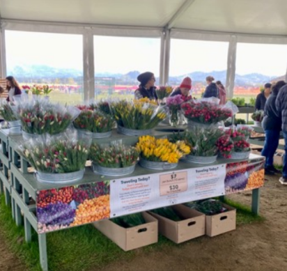
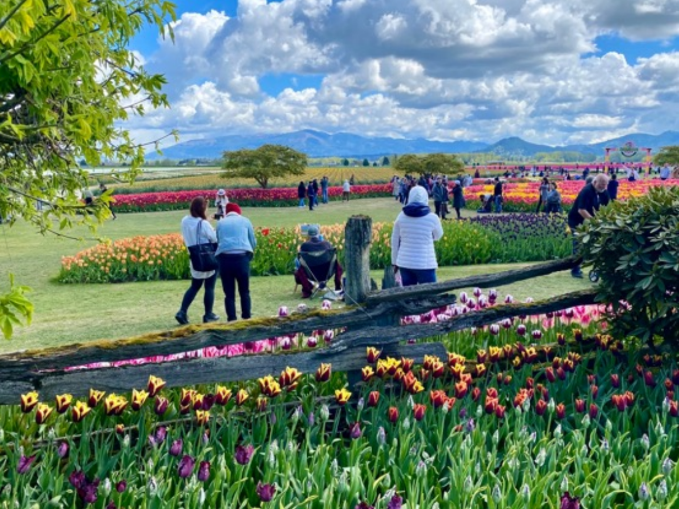